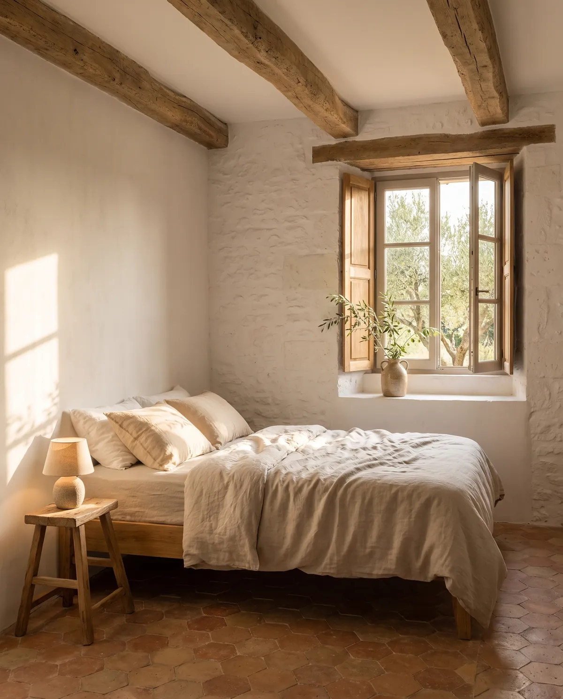
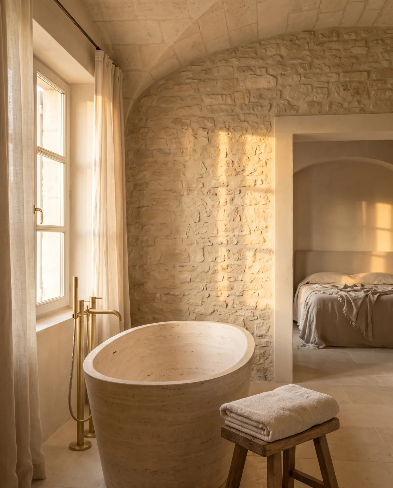
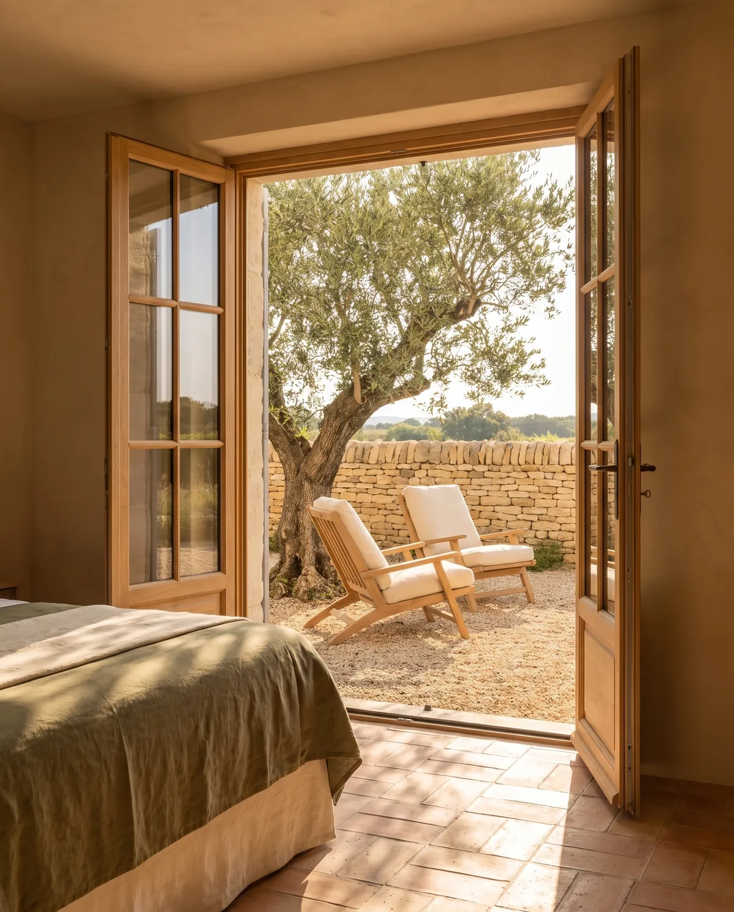
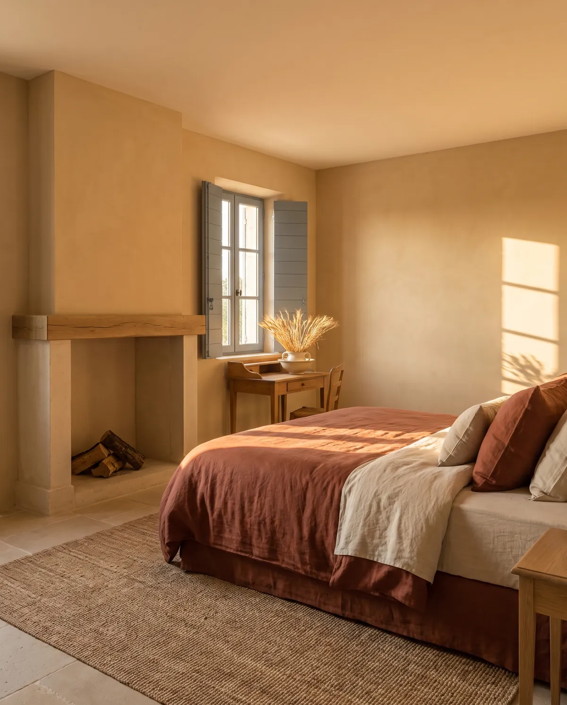
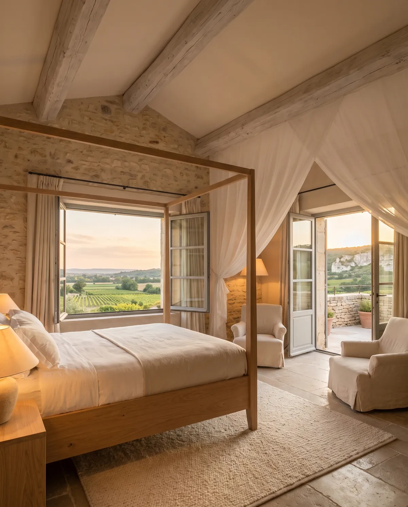
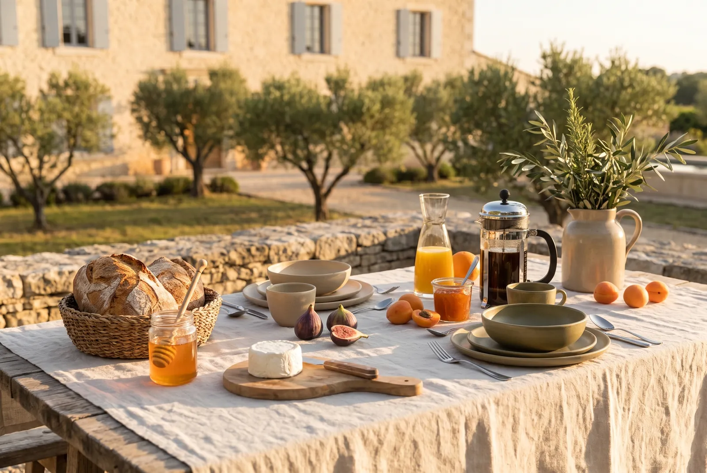
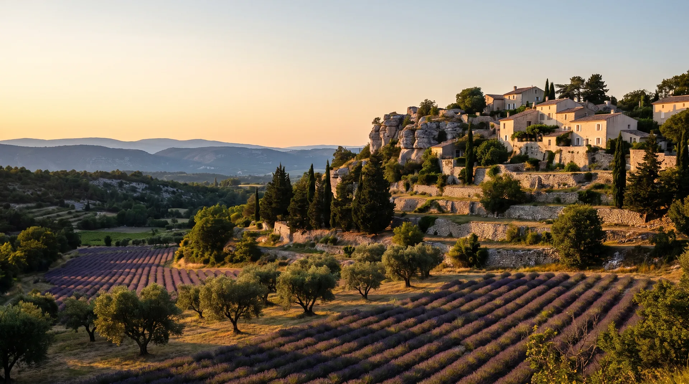
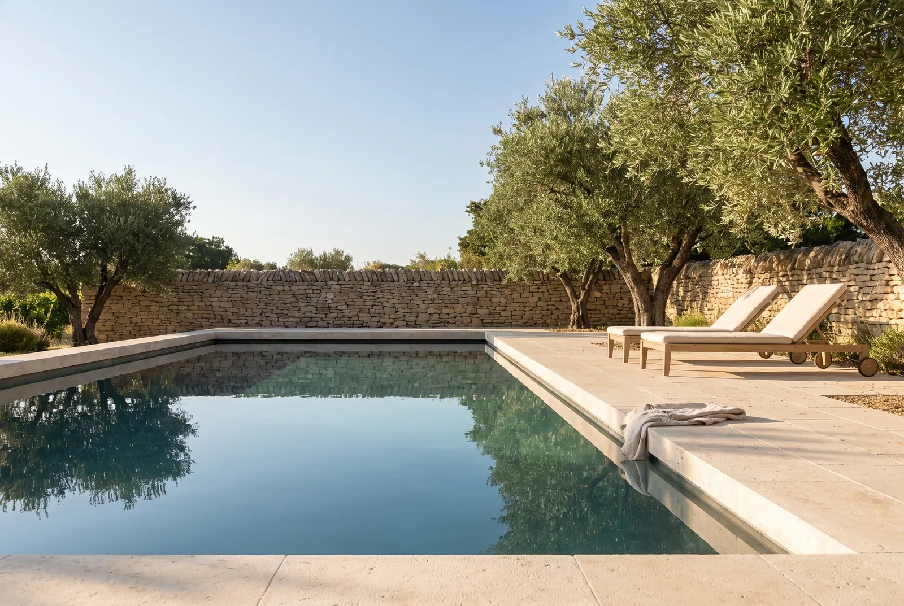

Le Lin
dès 240 €/ nuit
La plus simple, la plus douce. Des murs de chaux, une fenêtre profonde, un lit que l'on a voulu bas pour ne voir que les arbres.
Demander la réservationGordes · Provence · Ouverture en juin
Cinq suites, une oliveraie, une piscine taillée dans la roche. La Bastide Aurane ouvre ses portes en juin ; les réservations sont ouvertes.
Vous êtes entré. Le reste de la maison se visite plus bas.
Découvrir les suitesLa maison
Les suites
Chaque suite porte le nom de ce qui la définit. Toutes ont une salle de bain en pierre, du linge de lin lavé et une vue sur les oliviers ou la vallée. Petit-déjeuner compris.

dès 240 €/ nuit
La plus simple, la plus douce. Des murs de chaux, une fenêtre profonde, un lit que l'on a voulu bas pour ne voir que les arbres.
Demander la réservation
dès 280 €/ nuit
Sous l'ancienne voûte, une baignoire taillée dans un seul bloc. La lumière de fin d'après-midi y entre de biais et reste longtemps.
Demander la réservation
dès 320 €/ nuit
On ouvre les deux portes et la chambre continue dehors, sous un olivier plus vieux que la maison. Deux chaises, un muret, le silence.
Demander la réservation
dès 360 €/ nuit
Les pigments viennent de Roussillon, à vingt minutes. C'est la suite d'hiver comme d'été : un feu, une table pour écrire, des volets bleus.
Demander la réservation
dès 420 €/ nuit
Tout en haut, sous la charpente blanchie. La vallée entière tient dans la fenêtre, et la terrasse regarde le soleil finir sa course derrière les Monts de Vaucluse.
Demander la réservationLa table du matin
Servi sur la terrasse dès sept heures, ou plus tard, ou dans la suite. Rien n'est industriel, tout change avec la saison.

Le lieu et les environs
La bastide est posée à l'écart du village, au bout d'un chemin blanc. On entend les cigales, parfois une cloche. Tout le Luberon est à moins d'une demi-heure.

Nous ne sommes pas un hôtel. Il n'y a ni réception, ni horaires. Il y a un salon où l'on peut lire, une cuisine où le café est toujours chaud, et deux personnes qui vivent ici et connaissent les chemins.
Nous vous indiquerons le sentier qui monte à Murs par les murets, l'heure à laquelle Sénanque est vide, et le banc d'où l'on voit le village s'allumer.

La piscine et l'oliveraie
Le bassin a été creusé dans la roche du plateau et bordé de pierre de Ménerbes. Il est chauffé d'avril à octobre. Autour, cent quarante oliviers, dont certains ont trois cents ans, et l'huile que nous en tirons est sur la table le matin.
Ce que l'on nous dit
La maison ouvre en juin : les avis ci-dessous sont des exemples fictifs, présentés pour illustrer le ton du site. Ils seront remplacés par les premiers retours de nos hôtes.
« On est arrivés tard, la grille était ouverte et une lampe allumée. Le lendemain matin, le silence était tel qu'on entendait le café couler. »
« Rien de superflu, et pourtant on n'a manqué de rien. La baignoire en pierre au coucher du soleil est un souvenir à part. »
« Marie nous a envoyés sur un sentier dont aucun guide ne parle. On est redescendus à l'heure où la piscine prend la couleur du ciel. »
Réservation
La maison ouvre en juin. Nous prenons les demandes dès aujourd'hui pour les séjours à partir du 12 juin, et nous répondons personnellement sous vingt-quatre heures.
Demander la réservationContact
Pour une demande de réservation, dites-nous vos dates, la suite qui vous tente et ce qui vous ferait plaisir. Pour le reste, une question suffit.
Marie & Thomas bonjour@bastide-aurane.fr +33 4 90 00 00 00 Chemin des Murets · 84220 Gordes